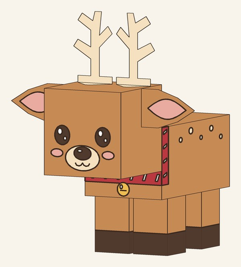
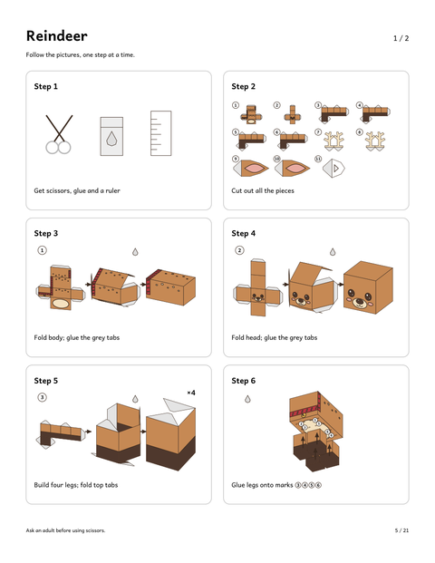
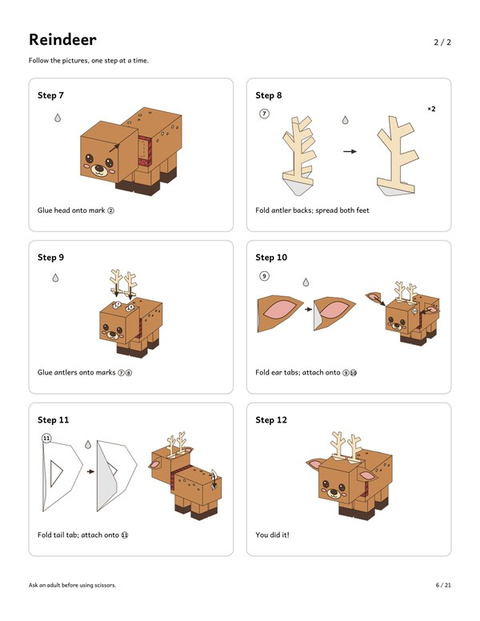
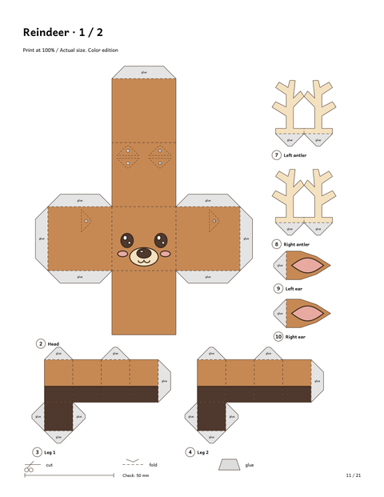
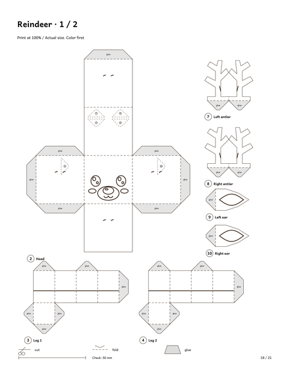
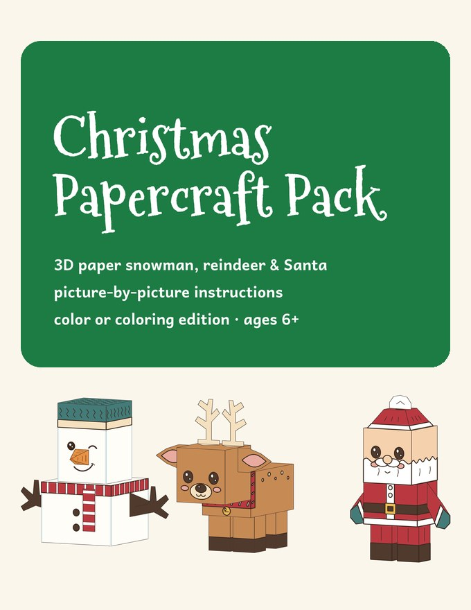

Paper Reindeer Craft for Kids
Printable 3D paper reindeer · 12 picture steps · ages 6+
This printable paper reindeer is a small standing 3D figure: a boxy brown body, four legs, a friendly face, pale antlers and a little collar with a bell. Built, it is about 4 in (10 cm) tall.
The instructions are 12 picture steps with almost no text, and each piece is numbered in the order you use it, so kids (ages 6+) can follow along while a grown-up cuts the smallest parts.
The reindeer is part of the full pack. To try the same picture-step method first, download the free paper snowman:
⬇ Download the free 3D paper snowman (US Letter PDF) ⬇ Download the free 3D paper snowman (A4 PDF)Free PDF includes:
- Picture-by-picture instructions (12 steps)
- Color template on 2 pages
A look at the reindeer pages





How the paper reindeer goes together
You start with scissors, glue and a ruler, then cut out all the numbered pieces. Next you fold the body and glue the grey tabs, fold the head, and build four legs. The legs are glued onto numbered marks on the body.
Steps 7 to 12 are on the second instruction page. They finish the figure piece by piece, always in number order, so there is no guessing which part comes next.
Color it first, or build it in color
The pack includes the reindeer template in full color and a coloring edition with black outlines. With the coloring edition, kids color the pieces with crayons or markers first, then cut and build, so every reindeer ends up a little different.
That makes it a good class-party or rainy-day craft: color first, build second.
The reindeer comes in the Christmas Papercraft Pack, together with a paper snowman and Santa.
Christmas Papercraft Pack

- 3D paper snowman, reindeer and Santa
- Picture-by-picture instructions — 12 small steps per figure, almost no text
- Color edition + coloring edition (color first, then build)
- US Letter & A4 · 21 pages · instant PDF download
$7.00
Get the Christmas Papercraft Pack →Printing and building tips
- Print at 100% ("Actual size"), single-sided, on cardstock (160–200 gsm, roughly 65–110 lb) if you have it.
- Check the 50 mm line on the first page after printing to confirm the scale is right.
- If you use the coloring edition, color before cutting.
- Let each join dry before adding the next piece, and ask an adult to do the cutting.
Frequently asked questions
How big is the paper reindeer?
About 4 in (10 cm) tall. It is a small figure that fits on a desk or shelf.
Is there a free paper reindeer?
No. The free printable is the snowman. The reindeer is in the Christmas Papercraft Pack, a 21-page PDF with the snowman, reindeer and Santa.
What age is it for?
Ages 6+, with a grown-up helping with the cutting. The steps are pictures, so there is very little to read.